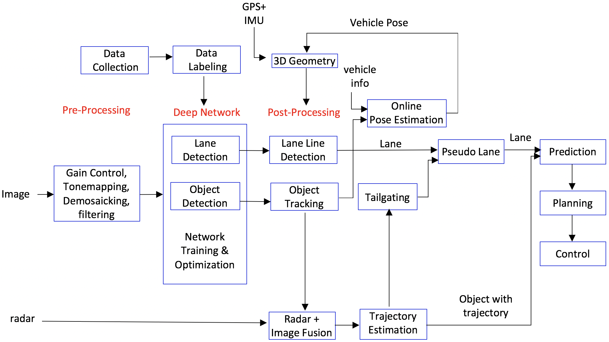

Perception
Apollo 3.0 June 27, 2018
Introduction
Apollo 3.0 introduced a production level solution for the low-cost, closed venue driving scenario that is used as the foundation for commercialized products. The Perception module introduced a few major features to provide more diverse functionalities and a more reliable, robust perception in AV performance, which are:
- CIPV(Closest In-Path Vehicle) detection and Tailgaiting: The vehicle in front of the ego-car is detected and its trajectory is estimated for more efficient tailgating and lane keeping when lane detection is unreliable.
- Asynchronous sensor fusion: unlike the previous version, Perception in Apollo 3.0 is capable of consolidating all the information and data points by asynchronously fusing LiDAR, Radar and Camera data. Such conditions allow for more comprehensive data capture and reflect more practical sensor environments.
- Online pose estimation: This new feature estimates the pose of an ego-vehicle for every single frame. This feature helps to drive through bumps or slopes on the road with more accurate 3D scene understanding.
- Ultrasonic sensors: Perception in Apollo 3.0 now works with ultrasonic sensors. The output can be used for Automated Emergency Brake (AEB) and vertical/perpendicular parking.
- Whole lane line: Unlike previous lane line segments, this whole lane line feature will provide more accurate and long range detection of lane lines.
- Visual localization: Camera's are currently being tested to aide and enhance localization
- 16 beam LiDAR support
Safety alert
Apollo 3.0 does not support a high curvature road, roads without lane lines including local roads and intersections. The perception module is based on visual detection using a deep network with limited data. Therefore, before we release a better network, the driver should be careful while driving and always be ready to disengage the autonomous driving mode by intervening (hit the brakes or turn the steering wheel). While testing Apollo 3.0, please choose a path that has the necessary conditions mentioned above and be vigilant.
-
Recommended road
- Road with clear white lane lines on both sides
-
Avoid
- High curvature road
- Road without lane line marks
- Intersections
- Dotted lane lines
- Public roads with a lot of pedestrians or cars
Perception module
The flow chart of Apollo 3.0 Perception module:

The sub-modules are discussed in the following section.
Deep Network
Deep Network ingests an image and provides two detection outputs, lane lines and objects for Apollo 3.0. There is an ongoing debate on individual tasks and co-trained tasks for deep learning. Individual networks such as a lane detection network or an object detection network usually perform better than one co-trained multi-task network. However, multiple individual networks will be costly and consume more time in processing. Therefore, the preferred economic choice is co-trained network. In Apollo 3.0, YOLO [1][2] was used as a base network of object and lane segment detection. The object has vehicle, truck, cyclist, and pedestrian categories and represented by a 2-D bounding box with orientation information. The lane lines are detected by segmentation using the same network with some modification. For whole lane line, we have an individual network to provide longer lane lines in cases of either whole or broken lines.
Object Detection/Tracking
In a traffic setting, there are two kinds of objects: stationary objects and dynamic objects. Stationary objects include lane lines, traffic lights, and thousands of traffic signs written in different languages. Other than driving, there are multiple landmarks on the road mostly for visual localization including street lamps, barriers, bridge on top of the road, or any other skyline construction. Among all those objects, Apollo 3.0 will detect only lane lines.
Among dynamic objects, Apollo can detect passenger vehicles, trucks, cyclists, pedestrians, or any other object including animals on the road. Apollo can also categorize objects based on which lane the object is in. The most important object is CIPV (closest in path vehicle or object). In order of importance, objects present in neighbouring lanes fall in the second category.
2D-to-3D Bounding Box
Given a 2D box, with its 3D size and orientation in the camera, this module searches the 3D position in the camera's coordinate system and estimates an accurate 3D distance using either the width, the height, or the 2D area of that 2D box. The module works without accurate extrinsic camera parameters.
Object Tracking
The object tracking sub-module utilizes multiple cues such as 3D position, 2D image patches, 2D boxes, or deep learning ROI features. The tracking problem is formulated as multiple hypothesis data association by combining the cues efficiently to provide the most correct association between tracks and detected object, thus obtaining correct ID association for each object.
Lane Detection/Tracking
Among static objects, we will handle lane lines only, in Apollo 3.0. The lane is for both longitudinal and lateral control. A lane itself guides lateral control and an object in the lane guides longitudinal control.
Lane Lines
We have two types of lane lines, lane mark segment and whole lane line. The lane mark segment is used for visual localization and whole lane line is used for lane keeping. The lane can be represented by multiple sets of polylines such as next left lane line, left line, right line, and next right lane line. Given a heatmap of lane lines from the Deep Network, the segmented binary image is generated through Thresholding. The method first finds the connected components and detects the inner contours. Then it generates lane marker points based on the contour edges in the ground space of ego-vehicle coordinate system. After that, it associates these lane markers into several lane line objects with corresponding relative spatial (e.g., left(L0), right(R0), next left(L1), next right(L2), etc.) labels.
CIPV (Closest-In Path Vehicle)
A CIPV is the closest vehicle in the ego-lane. An object is represented by 3D bounding box and its 2D projection from the top-down view localizes the object on the ground. Then, each object will be checked if it is in the ego-lane or not. Among the objects in our ego-lane, the closest one will be selected as a CIPV.
Tailgating
Tailgating is a maneuver to follow the vehicle or object in front of the autonomous car. From the tracked objects and ego-vehicle motion, the trajectories of objects are estimated. This trajectory will guide how the objects are moving as a group on the road and the future trajectory can be predicted. There is two kinds of tailgating, the one is pure tailgating by following the specific car and the other is CIPV-guided tailgating, which the ego-vehicle follows the CIPV's trajectory when the no lane line is detected.
The snapshot of visualization of the output is shown in the figure below:

The figure above depicts visualization of the Perception output in Apollo 3.0. The top left image shows image-based output. The bottom-left image shows the 3D bounding box of objects. Therefore, the left image shows 3-D top-down view of lane lines and objects. The CIPV is marked with a red bounding box. The yellow lines depicts the trajectory of each vehicle
Radar + Camera Output Fusion
Given multiple sensors, their output should be combined in a synergic fashion. Apollo 3.0. introduces a sensor set with a radar and a camera. For this process, both sensors need to be calibrated. Each sensor will be calibrated using the same method introduced in Apollo 2.0. After calibration, the output will be represented in a 3-D world coordinate system and each output will be fused by their similarity in location, size, time and the utility of each sensor. After learning the utility function of each sensor, the camera contributes more on lateral distance and the radar contributes more on longitudinal distance measurement. Asynchronous sensor fusion algorithm can also be used as an option.
Pseudo Lane
All lane detection results will be combined spatially and temporarily to induce the pseudo lane which will be fed to Planning and Control modules. Some lane lines would be incorrect or missing in a certain frame. To provide the smooth lane line output, the history of lane lines using vehicle odometry is used. As the vehicle moves, the odometer of each frame is saved and lane lines in previous frames will be also saved in the history buffer. The detected lane line which does not match with the history lane lines will be removed and the history output will replace the lane line and be provided to the planning module.
Ultrasonic Sensors
Apollo 3.0 supports ultrasonic sensors. Each ultrasonic sensor provides the distance of a detected object through the CANBus. The distance measurement from the ultrasonic sensor is then gathered and broadcasted as a ROS topic. In the future, after fusing ultrasonic sensor output, the map of objects and boundary will be published as a ROS output.
Output of Perception
The input of Planning and Control modules will be quite different with that of the previous Lidar-based system for Apollo 3.0.
-
Lane line output
- Polyline and/or a polynomial curve
- Lane type by position: L1(next left lane line), L0(left lane line), R0(right lane line), R1(next right lane line)
-
Object output
- 3D rectangular cuboid
- Relative velocity and direction
- Type: CIPV, PIHP, others
- Classification type: car, truck, bike, pedestrian
- Drops: trajectory of an object
The world coordinate systen is used as ego-coordinate in 3D where the rear center axle is an origin.
References
[1] J Redmon, S Divvala, R Girshick, A Farhadi, "You only look once: Unified, real-time object detection," CVPR 2016
[2] J Redmon, A Farhadi, "YOLO9000: Better, Faster, Stronger," arXiv preprint